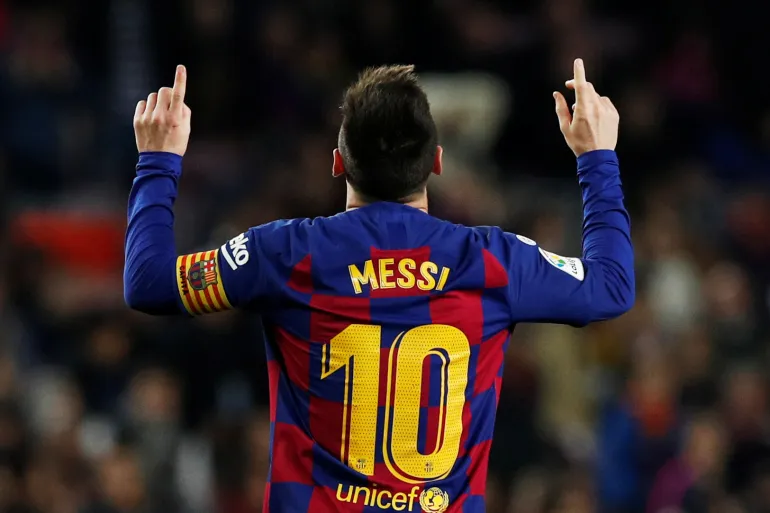
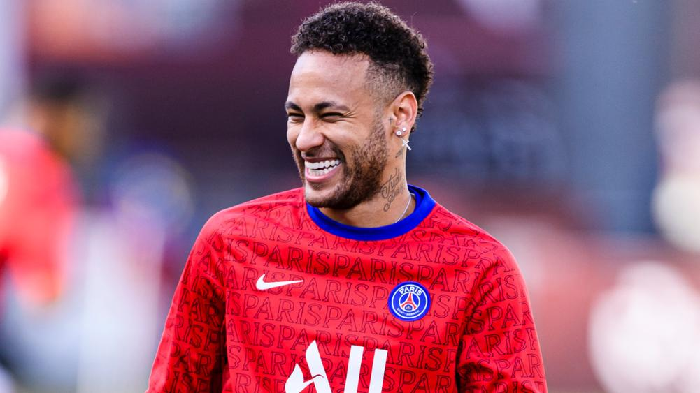
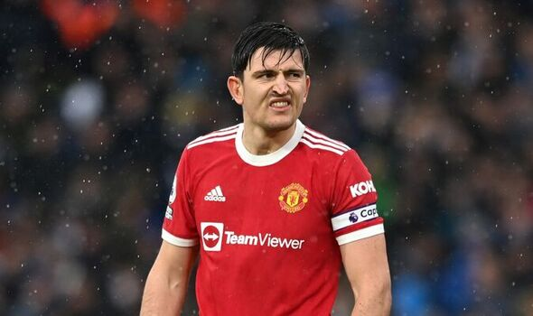

Soccer is the biggest sport in the world, with over 3 billion viewers worldwide. The biggest tournement being the FIFA World Cup which happen every 4 years. The most recent winners being Argentina in December of 2022. There are thousands of different leagues across the world, the best ones being, the Premier League, La liga and Serie A.
Click this link to learn more about soccer leagues.
Lionel Messi is an argentinian soccer player that is widely known as the greatest player of all time. He plays for PSG and has 7 Ballon D'ors, 6 golden boots and has recently just won a World Cup winning the golden ball in the process. He has 800 career goals and has most assists of all time, he also hold the title for having most Ballon D'ors, Golden Boots and Golden balls. He is 35 years of age and his birthday is on June 24.
Click this link to learn more about Lionel Messi.
Cristiano Ronaldo is a Portuguese soccer player who is considered one of the greatest players of all time. He has 5 Ballon D'ors, 5 golden boots and plays for Al Naasr in Saudi Arabia. He holds the record for most goals and most international goals. He is 38 years old and his birthday is on Febuary 5. He is known for his incredible speed, precision, and scoring ability on the pitch, and his charismatic personality off the pitch.

Click this link to learn more about Cristiano Ronaldo.
Neymar Jr. is a Brazillian soccer player who is considered one of the best players of this generation. He plays for PSG alongside Messi and is wideley known for exceptional dribbling skills, speed, and creativity on the pitch. He has won numerous awards and certificats including Copa Libertadores, La Liga, and the Champions League. He also has a huge global following, both on and off the pitch.
Click this link to learn more about Neymar Jr.
Harry Maguire is an English football player that is widely known as the worst player of all time. He is 30 years of age and his birthday is on March 5. He is a defender for Manchester United and one season, has had more own goals than actual goals. He is known as a Fridge and gets thrashed by football fans around the world for being a terrible defender. He has 11 goals in his entire career and a mind-boggling 8 assists in 214 appearance
Click this link to learn more about Harry Maguire.
©2023 All rights reserved to Wreeg Poudyal.